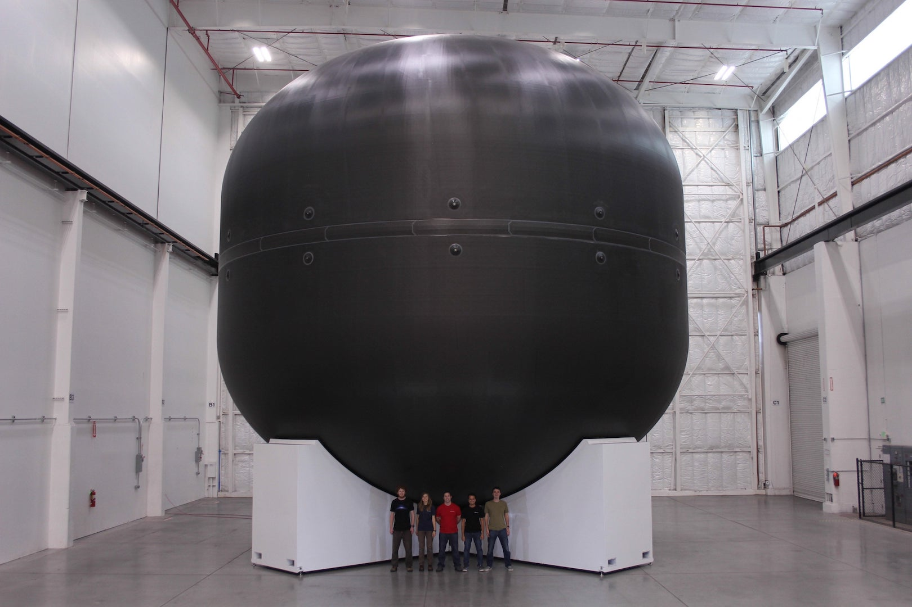

Reducing the overall mass of spacecraft yields an increase in fuel efficiency, one of the most expensive aspects of space travel. The replacement of metallic components with polymer-matrix composites is one strategy to provide comparable structural performance while reducing weight. One such component is the fuel tank assembly, which holds liquid oxygen fuel at cryogenic temperatures. This component is housed inside the fuselage and is therefore not exposed to significant radiation or ablation during any stage of spaceflight. In this scenario, the engineering team has already selected the reinforcement (carbon fiber) and computed the optimal reinforcement architecture for a pressure vessel. The engineering team also has experience with fabrication of pressure vessels such that they have tight control over reinforcement architecture.
For polymer-matrix composites to replace metals in this application they must possess comparable strength and stiffness to high-strength aluminum alloys while minimizing density. As opposed to aluminum alloys, the fibers must be aligned to compensate for the difference in hoop and longitudinal stresses in the composite shell. The composite must maintain structural integrity (i.e., fracture resistance) at temperatures far below the glass transition temperature of typical matrix polymers (-207 °C). Therefore, any mismatch of coefficient of thermal expansion between dissimilar materials must be minimized and composite toughness must be maximized. The composite must only tolerate exposure to the oxygen fuel, which may degrade the polymer matrix, affect matrix-reinforcement interface behavior, and lead to embrittlement and catastrophic failure. Further, due to the large form factor of the fuel tank assembly, the layup process must be scalable.